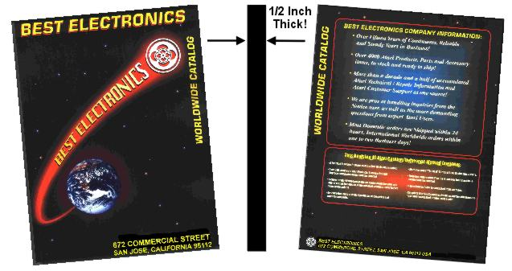

Out of the State of California (includes shipping charge) Printed Copy U$D 17.15*
Within the State of California Add your local CA Sales tax rate based on U$D 7.50 only plus U$D 9.65 Shipping to get a total
*Price includes current US Shipping charge, if you include a Best Rev. 10 all Atari Catalog with a normal Best Atari order, Catalog cost is U$D 7.50.
US Postal Money order made out to Best Electronics is the best payment method. Any other form of payments, like a personal check, other type or brands of Money Orders or Casher's checks can take up to one to several months or more to clear thru our back logged Atari Accounting department and that Best all Atari Catalog order released to our Atari shipping department. We simply do not receive very many Personal Checks, other brand of Money orders or Cashiers Checks for Atari Mail order payments any more. So we are very lucky to do a once every several months bank deposit of any personal checks or other brands of money order Atari Mail order payments. We go to the US Post Office almost 7 days a week here.
Shipping costs vary from Country to Country. Most International countries accept the Cost Effective U.S. International Priority Mail Flat Rate mailing envelope (around U$D 41.25 shipping charge, Canada U$D 29.60) service and some others only accept U.S. 1st Class Air Mail deliveries / service. Contact us Via , E-Mail or EFAX (number below) for Payment methods and shipping cost to your International location.
Joel F. of MO Joel visited the Best Atari Web site for the 1st time. He spotted some Atari Collector items he wanted. He also ordered Bests 228 page all Atari catalog.
Boris S. of NV On his second recent Atari order to Best. Boris picked up the Best Rev. 10 220+ page all Atari catalog.
Garry T. of OH
Guy T. of Australia
Peter H. of New Zealand
Noel M. of Canada
Curt Vendel of the Atari History Site (NY)
A. The Best Rev. 10 all Atari Catalog / Reference Manual / Bible is one of the most Comprehensive Printed Single Sources of Instant Atari Information in the World. All of the Atari information on the Internet does you no good if you are at a Swap meet / Yard sale (and must make an Instant decision to buy or pass on an Atari item you found) and you need to know if you can get Atari replacement parts for an Atari Treasure you found that is missing or has damaged one or two key items / parts. Many eBay Atari surfers wished they had a Best Rev. 10 catalog before they found out about it, when they find the listed as “Rare Atari item, used” they just bought for a lot of money, was just a Stock Atari product you can buy New and Cheaper in the Best catalog. On the other hand, if it is listed as an “Atari Rare item” on eBay and you do not see it in the Best catalog, buy it fast! The Best Rev. 10 Catalog is produced by an Atari Company that has been in the Atari Business for over 24+ years and has first hand Knowledge, Technical Information and Experience on all Atari Consumer Products ever made and has added this collective Knowledge and Information to the Best Catalog. The average Atari information you find on the Internet is only based on 2 to 5 to 8 years of personal Knowledge or Experience with Atari products.
A. The back section Best Rev. 10 Catalog contains one of the most comprehensive listings of Atari product I/O Ports and Atari Power supply connectors in World. Just about every Atari Consumer product they made is covered in the reference section. 10 pages with over 63 different Atari connector pictures with Atari pin out specifications. The only other way of getting such detailed Atari pin out information would to buy the Atari Field Service Manual for each of the Atari products. Some of the Best Atari connector information is not normally available at all, because Atari did not make Service Manuals for certain Atari products they made!
A. Most Atari Collectors and People getting back into Atari Collecting, Old Atari users with multiple Atari Systems they are now just digging out again, Atari people who repair Atari products, Atari eBay Surfers and Sellers, Fleamarket / Swapmeet searchers and Atari Dealers World Wide use the Best Catalog as their Reference Manual for Repair parts, General Atari product Information and as a Bench Mark Atari Reference Guide. The Best All Atari Catalog is usually not for the Average one Atari product owner.
A. For Security reasons, we do not Maintain a list of our customers Credit Card account numbers for more than a few weeks. So If you have not ordered from us in a few months, you will have to give your Credit Card details again. For steady Best customers who place orders with Best on a regular basis, with their permission, we do retain Credit Card information.
A. Yes, there are a lot of Questionable, fake, made up and Pirated Atari products and Atari Collector items on eBay. Ebay does very little to screen these items, basically it is buyer be aware! Even if you complain, they do next to nothing about these questionable Atari listed items. A good reference as to a genuine Atari consumer produced product is the Best Rev. 10 Catalog and the Memorabilia Museum section in the back of the Best Rev. 10 Catalog. Of course The Best Catalog does not cover all the hundreds of different Atari promotional items made by other Companies for Atari, but is a very good reference source.
A. Yes, the "Rare" description is one of the most over used listing words on Ebay. Yes, we have seen used / questionable / "As is" / "Sold As is" Atari items sell on Ebay for more money then the New Atari products we have in stock, which come with a normal Atari Warranty! People just get caught in the Ebay bidding process.
A. Our Atari accounting records shows our three oldest active Best Customers still placing current Atari orders with us, are Customer numbers BT00075, BT00179 and BT00295. We estimate they have been Best Atari customers for over 30+ years now
A. The Best Catalog is more like a Book, Reference Manual, Industry Standard or Atari Collectors Guide. After three years work on the Best Rev. 10 Catalog, it is only being sold at “Cost To Produce” and Shipping cost only! The Cost to Produce price does not include over 1251+ Man hours that went into Writing it, Photographing it, Researching it, Verifying the extensive Atari information it contains. It was produced for People who Grew up with Atari Products and Love them!
A. The Best Catalog lists all of it's Atari parts, products and items by the original Atari part number. Some Atari items in the Best Catalog are listed by the Best Series of part numbers (Atari did not have a current part number for them when the Best Catalog was produced). So if you know what Atari product group of Atari products (2600, 8 bit, Atari ST and so on) you can look up that part number and see the description. If it an Atari I.C., The Best Catalog has the most complete Atari I.C. Listing by Atari part number in the world.
A. We have checked with the California State Board of Equalization and they say, we have to charge CA Sales tax on the Sale of the Best Catalog sent to a California address.
A. Most International Locations / Countries we ship the Best Catalog to in the World, DO NOT Charge Custom Duties on “Printer Matter” only.
A. For US residents, it is shipped U.S. Priority Mail (typical 2 - 3 day service). For International Residents, it is shipped U.S. Global Priority Mail (typical 3 to 5 day service) or U.S. International Air Mail (7 to 14 day typical service) depending on your country and time of the year.
A. Since we are trying to be "Nice Guys" and only sell the Best Rev. 10 all Atari Catalog at Cost only, On each Credit Card sale, the Credit Card processors change us a percentage of each sale. Any Credit Card Sales under U$D 20 that percentage charge jumps up to even higher Rate. When you sell hundreds, if not thousands of the Best Catalogs at Cost every year, any Credit Card service charge just adds up to a pure loss per catalog. Now if we were selling the Best Rev. 10 Catalog / Reference Manual / Bible for it’s True Value / Profit to Atari users and owners, then Credit card Sales would be another matter. We do accept Credit Card Sales on the other 5,000+ Atari items in our Best Rev. 10 Catalog, as long as they meet our Min. Credit Card sale of U$D 20 plus shipping. We do accept US Personal Checks for the Best Catalog but since we no longer make regular bank deposits anymore, it can take up to 1 to 2 months to clear our Atari accounting department. The best payment method is a US Postal Money order, the Best Catalog is usually shipped the same or next working day here.
A. No, we do not hold Personal US checks or Money Orders for any Atari Mail orders we receive. All orders for Best Catalogs or Mail Orders are usually shipped within one or two working days here, after receiving your payment.

220+ pages, ½ inch thick, 1.4 pounds All Atari Catalog
Covers just about Every Atari Consumer product made from the Original Atari Pong to the last Atari 64 Bit Jaguar System
A four fold increase in pages over our last Rev. 9 All Atari Catalog
Over 330 Pictures of Atari Products, Atari Accessories and Atari Replacement parts
Pictures of Atari Prototype Products Never released, Engineering Samples and many One-Of-A-Kind (the only known Atari samples to still exist in the World) and hand made proposed Atari products never seen by the Public.
Over 5000+ Atari Products, Atari Parts and Atari Accessories
“The Best” Series of Atari Products and Replacement Atari Parts
Over 30+ Best Interesting and Informative Atari Information Tips
Over 55+ Atari product Tech Repair Tips and Tricks
A New Best Catalog Index for easy Atari item searches
An Atari Product and Memorabilia Photo Museum
Complete Atari Product Connector (Power jacks, Video, Printer, Joystick, Mouse, Modem and much more) I/O Drawings and Specifications on just about every Atari Consumer Product made. One of the most complete single source Atari connector listings in the World
The most Complete Atari Custom Chip and Replacement I.C. listing in the World, by Atari Part number
The Best Rev. 10 All Atari Catalog took over 3 years to produce
Each Best Rev. 10 All Atari Catalog comes with a short Best Electronics News article, “The Story behind the Best Rev. 10 Catalog”!